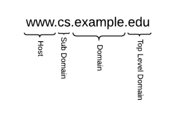

DNS
DNS discussed also in these chapters:
•
TCP/IP
→ Application layer → DNS•
Recoinnaisssance →
DNS•
Sniffing
→ DNS Spoofing (router)•
Vulnerability
Assessment → DNS•
Post
Exploitation → MitM attack → NTLM relay attack → DNS SpoofingThe
Domain
Name
System (
DNS) is an
application layer protocol, it provides name resolution to IP addresses
and vice versa
A DNS name such as www.cs.example.edu can be broken in the following part:
• Top Level
Domain(TLD)
• Domain part
• Subdomain part (not always)
• Host part
To convert a DNS name into an IP address, the
operating system must contact a
resolver server( example:CloudFlare 1.1.1.1, Google 8.8.8.8 or
OpenDNS 208.67.222.222) to perform the DNS resolution. The resolver breaks down the DNS name in its parts and uses
them to convert a DNS name into an IP address starting from the TLD:
1. OS query to the
recursive resolver server to resolve the DNS name
2. System Administrators that manage a
DNS recursive resolver server typically need to configure a “root
hints file”. This file contains the names and IP addresses of the
Authoritative Root Name
Servers(ARNs) that contain informations about the
TLD Authoritative
Name Server(.com, .edu, ..)
List of Authoritative Root Server
| hostname |
ipv4, ipv6 |
operator |
| a.root-servers.net |
198.41.0.4, 2001:503:ba3e::2:30 |
Verisign, Inc. |
| b.root-servers.net |
199.9.14.201, 2001:500:200::b |
University of Southern California,
Information Sciences Institute |
| c.root-servers.net |
192.33.4.12, 2001:500:2::c |
Cogent Communications |
| d.root-servers.net |
199.7.91.13, 2001:500:2d::d |
University of Maryland |
| e.root-servers.net |
192.203.230.10, 2001:500:a8::e |
NASA (Ames Research Center) |
| f.root-servers.net |
192.5.5.241, 2001:500:2f::f |
Internet Systems Consortium, Inc. |
| g.root-servers.net |
192.112.36.4, 2001:500:12::d0d |
US Department of Defense (NIC) |
| h.root-servers.net |
198.97.190.53, 2001:500:1::53 |
US Army (Research Lab) |
| i.root-servers.net |
192.36.148.17, 2001:7fe::53 |
Netnod |
| j.root-servers.net |
192.58.128.30, 2001:503:c27::2:30 |
Verisign, Inc. |
| k.root-servers.net |
193.0.14.129, 2001:7fd::1 |
RIPE NCC |
| l.root-servers.net |
199.7.83.42, 2001:500:9f::42 |
ICANN |
| m.root-servers.net |
202.12.27.33, 2001:dc3::35 |
WIDE Project |
4. the resolver server contact the
TLD Authoritative Name
Sever(.com, .edu, ..) that contain informations about the
Domain Authoritative
Name Server 5. the resolver asks to the
domain Authoritative
Name Server for the
Sub Domain(s) 6. the resolver asks to the
subdomain Authoritative Name Server for the
Host A → a host address
MX →
identifies a mail exchange for the domain
NS → the authoritative name server for the domain, a name server
that can resolve the hostname is the authoritative name server for that domain
image source:
tcpipguide.com
Bibliography:
https://www.iana.org/domains/root/servers